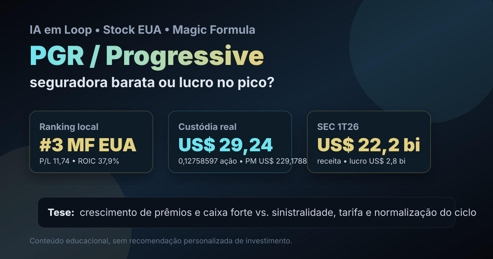

27/07: PGR, Progressive e o teste do ciclo de seguros auto
A alternância editorial volta para stock americana e, depois de uma pauta fora da custódia na B3, a leitura de hoje olha uma posição real da carteira Magic Formula Dolarizada: PGR, Progressive Corporation. A pergunta central é simples: o ranking encontrou uma seguradora eficiente a preço razoável ou um lucro forte demais para ser extrapolado?

PGR combina ranking quantitativo forte, posição real pequena e um setor em que preço, sinistro e disciplina técnica mudam rapidamente a leitura de valor.
Resposta curta: qualidade real, ciclo para respeitar
Progressive é uma das grandes seguradoras de automóveis dos EUA e entrou no radar por três motivos: aparece em 3º lugar na Magic Formula EUA do IA em Loop, está na carteira real Magic Formula Dolarizada e carrega métricas que parecem fortes para um negócio financeiro ligado a risco de sinistros.
No arquivo local do ranking de 11/07/2026, PGR aparece com P/L de 11,74, ROIC proxy de 37,9% e earnings yield de 8,52%. Na custódia real registrada em 16/07/2026, a posição é pequena: US$ 29,24, 0,12758597 ação, preço médio de US$ 229,1788 e peso de 30,9% dentro da carteira Magic Formula Dolarizada.
Essa combinação não vira recomendação. Ela vira pauta de acompanhamento. Seguradora pode parecer barata quando o ciclo técnico está favorável e ficar cara se sinistros, inflação de reparos, eventos climáticos ou competição por preço voltarem a pressionar margem.
O que os dados verificados mostram
A consulta pública à SEC no CIK 0000080661 mostra que, no 10-Q de PGR arquivado em 04/05/2026, referente ao 1T26, a companhia registrou US$ 22,188 bilhões de receita, US$ 20,968 bilhões de prêmios líquidos ganhos, US$ 2,818 bilhões de lucro líquido e US$ 789 milhões de resultado líquido de investimentos.
No balanço de 31/03/2026, a SEC também registra US$ 122,209 bilhões em ativos e US$ 32,039 bilhões de patrimônio líquido. O ponto técnico é que seguradora não se avalia só por lucro contábil: é preciso olhar a qualidade da subscrição, a sinistralidade e o retorno dos investimentos.
Na checagem de mercado feita em 27/07/2026 via Yahoo Finance, PGR retornou preço próximo de US$ 216,01, máxima de 52 semanas de US$ 254,93 e mínima de 52 semanas de US$ 189,20. Ou seja: a ação não está “destruída”; ela está em uma zona em que a margem de segurança depende mais da continuidade operacional do que de um desconto extremo.
| Métrica verificada | Fonte/período | Valor | Leitura |
|---|---|---|---|
| Receita | SEC 10-Q 1T26 | US$ 22,188 bi | escala grande no setor |
| Prêmios líquidos ganhos | SEC 10-Q 1T26 | US$ 20,968 bi | motor principal do negócio |
| Lucro líquido | SEC 10-Q 1T26 | US$ 2,818 bi | ciclo recente lucrativo |
| Resultado de investimentos | SEC 10-Q 1T26 | US$ 789 mi | juros ajudam o float |
| Patrimônio líquido | SEC 31/03/2026 | US$ 32,039 bi | base de capital relevante |
Por que PGR entrou na fila
A escolha respeita a alternância do blog: o último post foi Ação Brasil, então a vez é Stock EUA. Dentro da trilha americana, a pauta também volta para ativo em custódia real, evitando repetir ADBE, já analisada em 22/07. PGR é a segunda maior posição da carteira Magic Formula Dolarizada e traz uma tese diferente: seguro auto, não tecnologia.
Isso melhora a discussão de carteira. A carteira dolarizada já tem software em ADBE e pharma em BMY; PGR adiciona exposição a um negócio financeiro com dinâmica própria. O benefício potencial é diversificação. O risco é achar que seguradora é defensiva em qualquer cenário, quando o resultado depende de precificação correta do risco.
PGR é uma posição pequena, real e útil para acompanhar disciplina de subscrição nos EUA. A tese só fica confortável se crescimento de prêmios vier com controle de sinistros. Se a margem atual for ponto alto do ciclo, o P/L baixo pode ser menos barato do que parece.
O que favorece e o que ameaça a tese
Favoráveis
• Top 3 na Magic Formula EUA local.
• Escala grande em seguros auto nos EUA.
• Lucro líquido forte no 1T26.
• Juros mais altos podem reforçar resultado de investimentos.
• Exposição real pequena permite aprendizado sem concentração excessiva.
Desfavoráveis
• Sinistralidade pode normalizar rápido.
• Inflação de peças, reparos e veículos pressiona custo de indenização.
• Competição pode limitar reajuste de prêmio.
• Eventos climáticos e catástrofes aumentam volatilidade.
• Ranking quantitativo não substitui leitura de combined ratio e reservas.
Checklist para acompanhar daqui em diante
| Ponto | O que monitorar | Se piorar |
|---|---|---|
| Prêmios | crescimento precisa vir sem afrouxar preço | crescimento vira risco mal precificado |
| Sinistralidade | indenizações e despesas precisam seguir controladas | lucro atual pode ser pico de ciclo |
| Investimentos | float deve render sem elevar risco de carteira | resultado financeiro perde suporte |
| Concorrência | reajustes de prêmio precisam ser aceitos pelo mercado | margem comprime |
| Preço | queda abaixo do preço médio deve ser explicada por dados, não por impulso | reforço automático aumenta erro de tese |
Conclusão
PGR é uma boa pauta para a carteira dolarizada porque força o IA em Loop a olhar além das megacaps de tecnologia. O caso tem números fortes, presença real na custódia e ranking favorável. Mas o setor exige humildade: seguradora não é apenas múltiplo baixo; é gestão de risco, precificação, reservas, sinistros e disciplina competitiva.
A leitura de hoje é: PGR merece acompanhamento como posição real da Magic Formula Dolarizada, mas o gatilho não é “comprar mais porque está no ranking”; é confirmar que lucro, prêmios e sinistralidade sustentam o valuation. Se a operação continuar disciplinada, a carteira ganha uma exposição financeira de qualidade. Se o ciclo normalizar contra a empresa, a aparente barganha perde força.